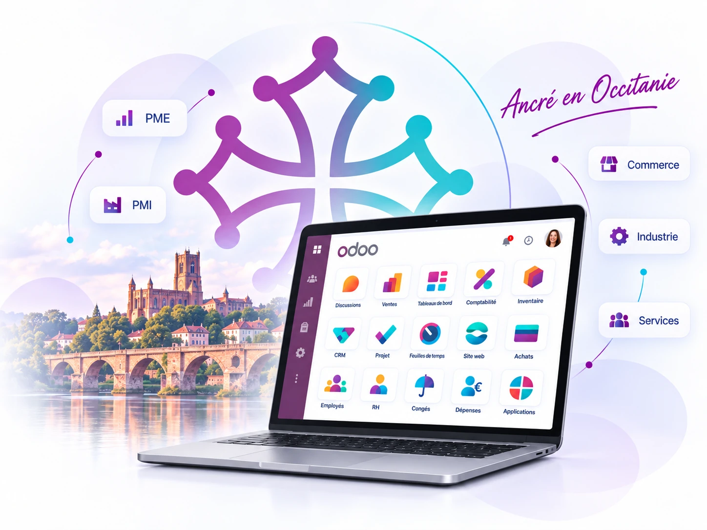

31
Haute-Garonne
Toulouse et son bassin économique constituent une zone prioritaire pour les projets Odoo, avec un ancrage fort sur les métiers du commerce, des services et de l’industrie.
Votre partenaire Odoo en région
 en Occitanie
en OccitanieSMART C&P, intégrateur Odoo basé à Albi, accompagne les entreprises d’Occitanie dans leurs projets ERP. Nous combinons proximité, expertise métier et consultants Odoo pour intervenir à distance et sur site lorsque les étapes du projet le nécessitent.

Couverture régionale
Nous développons progressivement des pages locales utiles, sans créer de faux bureaux ni dupliquer artificiellement les contenus.
Le lieu change ; notre exigence sur le cadrage, les itérations et l’adoption reste la même.
Comprendre les enjeux, les processus, les utilisateurs et le périmètre prioritaire.
Construire la solution par cycles courts et valider régulièrement les arbitrages.
Préparer la mise en production, former les équipes et sécuriser le démarrage.
Accompagner les usages et faire évoluer Odoo selon les besoins réels.
Basé à Albi, mobile en région
Les phases de découverte, les ateliers structurants, le lancement ou certaines formations peuvent justifier une présence sur site. Le pilotage, les démonstrations, les arbitrages et une grande partie du consulting peuvent être menés à distance.
Les réponses aux premières questions avant de cadrer votre projet Odoo.
Oui. SMART C&P est basé à Albi et peut accompagner les entreprises de toute l’Occitanie à distance et sur site selon les étapes du projet, notamment pour le cadrage, les ateliers, le lancement et la formation.
Oui, lorsqu'il est cadré autour des besoins réels. Nous privilégions une démarche progressive et une approche standard-first afin d'éviter une complexité qui n'apporte pas de valeur aux utilisateurs.
Le budget dépend du nombre d'utilisateurs, des applications, du paramétrage, de la reprise de données, de la formation, du pilotage et des éventuels besoins spécifiques. Le cadrage permet de construire une estimation sur un périmètre clair.
Oui, selon leur qualité et leur structure. Nous définissons les données utiles, les règles de nettoyage et les contrôles à effectuer avant leur import dans Odoo.
Appelez-nous ou planifions un premier échange sur votre contexte, vos priorités et votre calendrier.